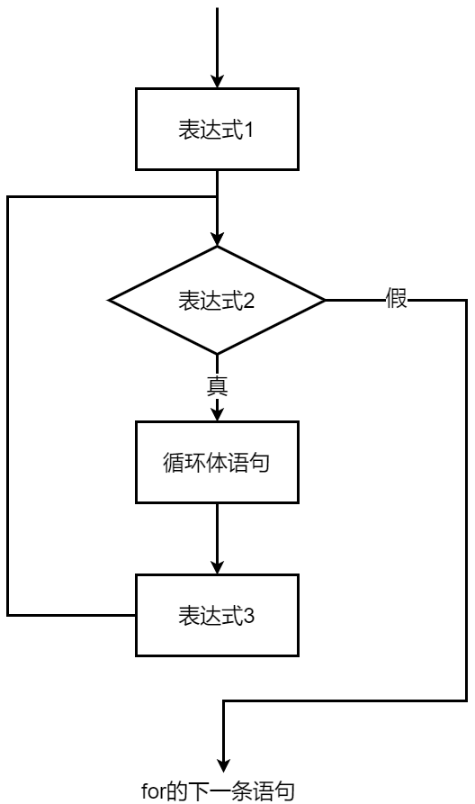

程序设计基础 · 第2次课 · 第3课时
从指定次数循环到函数分解，建立面向过程思维
输入一组成绩，统计合法成绩数量、平均分，并输出成绩等级。
n 和每个学生的成绩
合法性检查、累计求和、等级判断
每个成绩的等级与总体平均分
for 循环的初始化、条件、更新和循环体如果有30个成绩，哪些操作会重复？
ssumcntfor 循环：指定次数的重复
for (i = 1; i <= n; i++) {
scanf("%lf", &s);
sum = sum + s;
cnt = cnt + 1;
}
i = 1
从第1个成绩开始
i <= n
还没超过人数就继续
i++
处理下一个成绩
输入：3 个成绩 80 70 90
| 循环次数 | i |
s |
sum |
cnt |
|---|---|---|---|---|
| 初始状态 | - | - | 0 | 0 |
| 第1次循环 | 1 | 80.0 | 80.0 | 1 |
| 第2次循环 | 2 | 70.0 | 150.0 | 2 |
| 第3次循环 | 3 | 90.0 | 240.0 | 3 |
循环结束后：avg = sum / cnt;
sum = 0;
cnt = 0;
for (i = 1; i <= n; i++) {
scanf("%lf", &s);
if (s >= 0 && s <= 100) {
sum = sum + s;
cnt = cnt + 1;
} else {
printf("Invalid score\n");
}
}

i = 1（仅在入口执行一次）i <= n 是否成立i++ 递增，自动回到第②步判断
main 中
#include <stdio.h>
int main(void)
{
int i, n, cnt = 0;
double s, sum = 0.0, avg;
scanf("%d", &n);
for (i = 1; i <= n; i++) {
scanf("%lf", &s);
if (s >= 0 && s <= 100) {
sum = sum + s;
cnt = cnt + 1;
} else {
printf("Invalid score\n");
}
}
if (cnt > 0) {
avg = sum / cnt;
printf("average = %.1f\n", avg);
}
return 0;
}
main 中，会怎样？输入、校验、统计、等级判断都混在一起。
成绩等级判断可能在多个位置重复使用。
等级规则变化时，需要到处查找修改。
这时就需要 自定义函数 分解任务！
valid()判断成绩是否合法。
int valid(double s);mean()根据总分和人数计算平均分。
double mean(double sum, int cnt);show_grade()根据成绩输出等级。
void show_grade(double s);mainvalidshow_grademeanmain 只负责流程调度，具体业务交由各独立函数完成。
int valid(double s)
{
return s >= 0 && s <= 100;
}
double mean(double sum, int cnt)
{
return sum / cnt;
}
void show_grade(double s)
{
if (s < 60) printf("Fail\n");
else printf("Pass\n");
}
int valid(double s);
double mean(double sum, int cnt);
void show_grade(double s);
int main(void)
{
int i, n, cnt = 0;
double s, sum = 0.0;
scanf("%d", &n);
for (i = 1; i <= n; i++) {
scanf("%lf", &s);
if (valid(s)) {
sum += s;
cnt++;
show_grade(s);
} else {
printf("Invalid score\n");
}
}
if (cnt > 0)
printf("average = %.1f\n", mean(sum, cnt));
return 0;
}
从键盘输入一个正整数 $n$（$0 \le n \le 16$），在屏幕上格式化生成并输出一张从 $0!$ 到 $n!$ 的阶乘表。
样例输出（n = 5）：
0! = 1
1! = 1
2! = 2
3! = 6
4! = 24
5! = 120
int。int 上限（约 $2.14 \times 10^9$，只能存到 $12!$）。
double（或
long long）防溢出。
for 循环。
for (i = 0; i <= n; i++)。printf("%2d! = %.0f\n", i, ...); 打印。
double fact(int k)，接收 $k$，返回
double 结果。
double result = 1.0; 用
for 循环进行累乘。
main 只需调用
fact(i)，流程清晰简洁。
#include <stdio.h>
/* 自定义阶乘计算函数 */
double fact(int k)
{
int i;
double result = 1.0;
for (i = 1; i <= k; i++) {
result *= i;
}
return result;
}
int main(void)
{
int n, i;
printf("请输入 n (0 <= n <= 16): ");
scanf("%d", &n);
if (n < 0 || n > 16) {
printf("输入超出范围(0~16)！\n");
return 1;
}
printf("--- 0! 到 %d! 阶乘表 ---\n", n);
for (i = 0; i <= n; i++) {
printf("%2d! = %.0f\n", i, fact(i));
}
return 0;
}
main 清爽。
| 课时 | 核心主题 | 重点语法与结构 | 计算思维培养 |
|---|---|---|---|
| 第1课时 (2-1) | 数据与基本运算 |
int / double、scanf /
printf、除法精度
|
顺序结构思维与类型概念 |
| 第2课时 (2-2) | 条件与单分支 | 关系运算符、单 if-else 分支、<math.h> 库 |
分支互斥逻辑与边界测试 (54,55,56) |
| 第3课时 (2-3) | 循环与函数分解 | 指定次数 for 循环、自定义函数、数据溢出防范 |
模块化解耦与启发式 AI 协作建构 |
for (i = 1; i <= n; i++) 的循环控制逻辑。
double fact(int k)）的声明、定义与调用。
double 防范溢出。